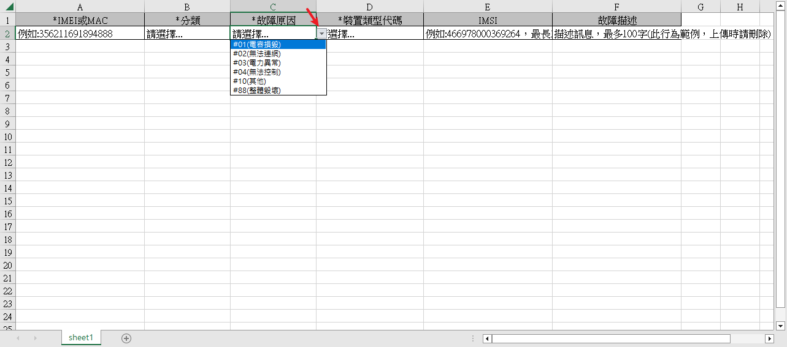

用Java code生成Excel檔案
並且Excel欄位有下拉選單(資料驗證)
知識點
- 用Java code 生成Excel檔案
- 簡單快入的更改字形、排版
- Excel欄位有下拉選單(資料驗證)
應用情景
- 有一個報修功能讓使用者可以上傳Excel的清單，系統可以讀取然後產生批量的報修單。於是有一個範例檔案
- 然而範例檔案還要達成傻瓜式操作，防止使用者填入錯誤的代碼，需要做成下拉清單，像這樣:

引用包
- Hutool、poi
Code
- 下拉選單的核心就在
writer.addSelect方法，只要把Enum轉為String[]就可以了
@GetMapping("/getExample")
public void getExample(HttpServletResponse response) throws IOException {
// 造下拉選單的array
Map<String, String> stateMap = new HashMap<>();
List<String> stateList = new ArrayList<>();
stateMap.put(LightCtrlDetailState.PM_ACCEPT.getCode(), LightCtrlDetailState.PM_ACCEPT.getDesc());
stateMap.put(LightCtrlDetailState.PM_DISCARD.getCode(), LightCtrlDetailState.PM_DISCARD.getDesc());
stateMap.forEach((k, v) -> stateList.add("#" + k + "(" + v + ")"));
String[] stateArray = stateList.toArray(new String[0]);
List<String> faultList = new ArrayList<>();
Map<String, String> faultMap = LightCtrlFault.toMap();
faultMap.forEach((k, v) -> faultList.add("#" + k + "(" + v + ")"));
String[] faultArray = faultList.toArray(new String[0]);
List<String> deviceTypeList = new ArrayList<>();
Map<String, String> deviceTypeMap = LightCtrlDeviceType.toMap();
deviceTypeMap.remove(LightCtrlDeviceType.L1.getCode()); // 排除通用的
deviceTypeMap.forEach((k, v) -> deviceTypeList.add("#" + k + "(" + v + ")"));
String[] deviceTypeArray = deviceTypeList.toArray(new String[0]);
ExcelWriter writer = ExcelUtil.getWriter(true);
Map<String, Object> row1 = new LinkedHashMap<>();
row1.put("*IMEI或MAC", "例如:356211691894888");
row1.put("*分類", "請選擇...");
row1.put("*故障原因", "請選擇...");
row1.put("*裝置類型代碼", "請選擇...");
row1.put("IMSI", "例如:466978000369264，最長15位");
row1.put("故障描述", "描述訊息，最多100字(此行為範例，上傳時請刪除)");
ArrayList<Map<String, Object>> rows = CollUtil.newArrayList(row1);
// 設定欄寬
writer.setColumnWidth(0, 30);
writer.setColumnWidth(1, 20);
writer.setColumnWidth(2, 20);
writer.setColumnWidth(3, 25);
writer.setColumnWidth(4, 30);
writer.setColumnWidth(5, 30);
// 設定字型
StyleSet styleSet =
writer.getStyleSet().setFont(HSSFColor.HSSFColorPredefined.BLACK.getIndex(), (short) 12, "新細明體", false);
CellStyle cellStyle = writer.getCellStyle();
cellStyle.setAlignment(HorizontalAlignment.LEFT); // 靠左
cellStyle.setDataFormat(Short.decode("0x31")); // 文字
writer.setStyleSet(styleSet); // 套用樣式
writer.addSelect(1, 1, stateArray);
writer.addSelect(2, 1, faultArray);
writer.addSelect(3, 1, deviceTypeArray);
writer.write(rows, true); // 一次性寫出內容，使用默認樣式，強制輸出標題
response.setContentType("application/vnd.openxmlformats-officedocument.spreadsheetml.sheet;charset=utf-8");
response.setHeader("Content-Disposition", "attachment;filename=test.xlsx");
ServletOutputStream out = response.getOutputStream();
writer.flush(out, true);
writer.close();
IoUtil.close(out);
}
前端下載
/** 獲取範例 */
function getExample() {
fetch(ems.parseUrl("file") + "/getExample")
.then(resp => resp.blob())
.then(blob => {
const url = window.URL.createObjectURL(blob);
const a = document.createElement('a');
a.style.display = 'none';
a.href = url;
// the filename you want
a.download = '(範例).xlsx';
document.body.appendChild(a);
a.click();
window.URL.revokeObjectURL(url);
toastr.success("成功，請查看下載檔案");
})
.catch(() => toastr.error("發生錯誤"));
}
上次修改於 2022-12-15